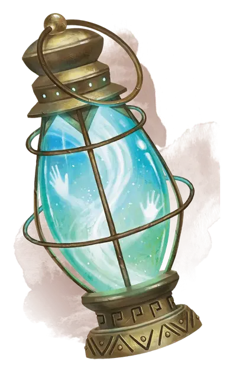

Призрачный фонарь
Ghost Lantern
Чудесный предмет, редкий (требуется настройка)

Рекомендованная стоимость 501-5 000 зм
Беспокойный дух запечатан внутри этого фонаря.
Удерживая фонарь, вы можете бонусным действием командовать духом, чтобы заставить фонарь излучать яркий свет в радиусе 30 футов и тусклый свет ещё на 30 футов.
Удерживая фонарь, вы можете использовать действие, чтобы заставить дух оставить фонарь, дублируя эффект заклинания волшебная рука [mage hand]. Дух возвращается в фонарь, когда заклинание заканчивается.
Если вы потеряете сознание в пределах 10 футов от фонаря, дух выйдет из него, магически стабилизирует вас прикосновением, а затем быстро возвращается обратно в фонарь.
Дух связан с фонарём и ему не может быть причинён вред, он не может быть изгнан или поднят из мёртвых. Накладывание на фонарь заклинания рассеивание зла и добра [dispel evil and good] освобождает дух от заточения и фонарь перестаёт быть магическим.